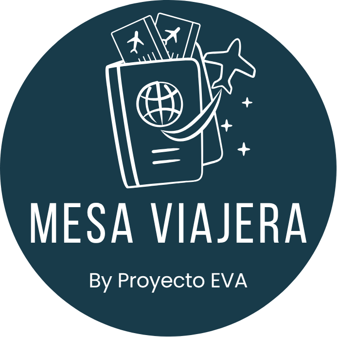
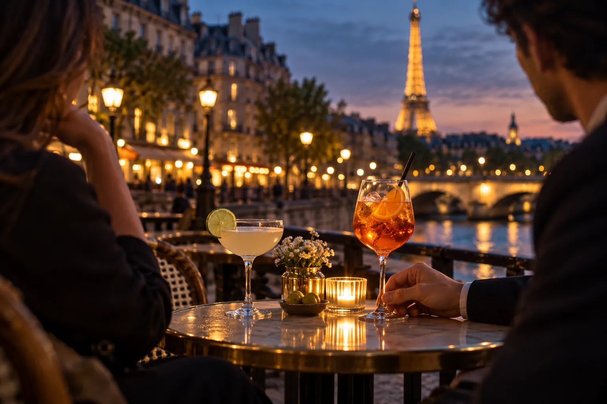
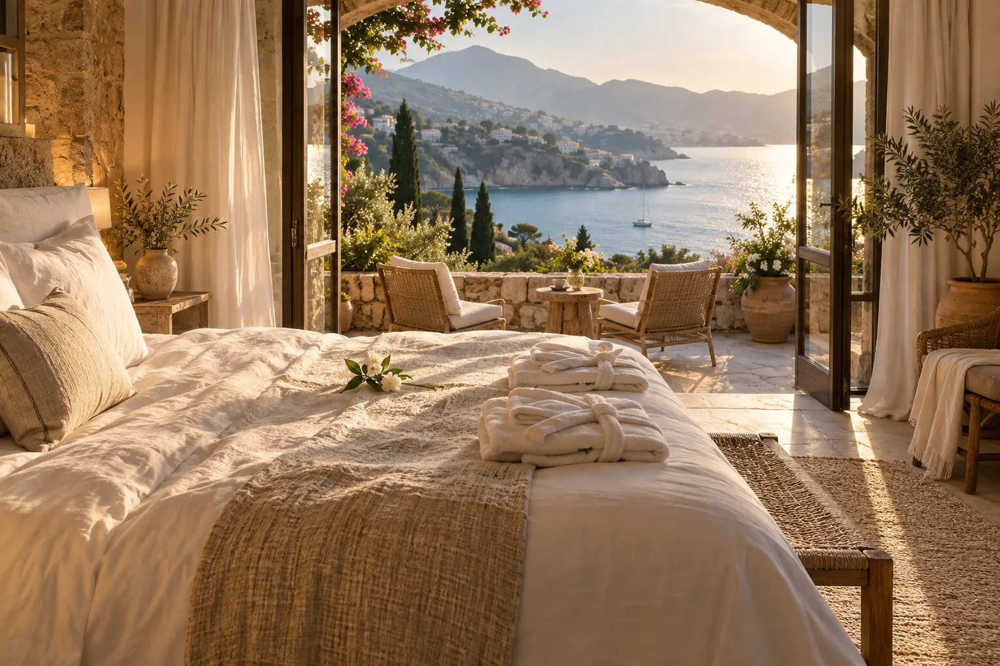

EL CAMINO
Vuelos y traslados
El primer despegue, un trayecto en tren o esos traslados que hacen posible la aventura.

UNA FORMA MÁS PERSONAL DE REGALAR
Creamos mesas de regalos para bodas, XV años, graduaciones, bautizos y otras ocasiones que merecen convertirse en experiencias.
01 / QUÉ HACEMOS
Mesa Viajera es una mesa de regalos digital diseñada alrededor de quien celebra. Reunimos viajes, experiencias y proyectos en una página personal que puede compartir con sus invitados.
Puede ser un viaje después de una boda, una experiencia por los XV años, un nuevo horizonte tras una graduación o recuerdos en familia para un bautizo. Cada regalo acompaña una historia distinta.
Una selección de regalos pensada en sus gustos, su momento y los planes que vienen.
Una manera significativa de participar en lo que viene después de la celebración.
UNA MESA PARA CADA CAPÍTULO
02 / EXPERIENCIAS
Estas son algunas formas de construir su mesa. Cada experiencia se elige según la ocasión, la persona y lo que quiere vivir después.
El primer despegue, un trayecto en tren o esos traslados que hacen posible la aventura.
Noches de hotel y estancias especiales para despertar en un lugar nuevo.
Una mesa compartida, un desayuno con vistas o un recorrido para probar algo por primera vez.
Paseos, visitas y actividades que convierten un destino en una historia para contar.
Una sorpresa, un momento de descanso o una celebración que merezca su propio recuerdo.
Un regalo flexible para acercar a quien celebra al viaje o proyecto que más ilusión le haga.
Cada mesa es diferente: las experiencias, fotografías, descripciones y valores se definen con quienes celebran antes de publicarla.
03 / CÓMO FUNCIONA
Conocemos a quién celebran, qué momento están viviendo y qué experiencias tienen sentido para esa historia.
Seleccionamos regalos, escribimos sus historias y preparamos una página a la medida de la ocasión.
Ellos descubren la historia y eligen cómo acompañar el siguiente capítulo.
FORMAS DE REGALAR
Varios invitados suman aportaciones para un objetivo, como un viaje o un proyecto especial.

Un brindis en París, un brunch o una visita guiada pueden elegirse más de una vez, según la ocasión.

Una experiencia especial, como una noche de hotel, se elige una sola vez.
04 / EMPECEMOS
Cuéntenos qué celebran y a quién. Construyamos una Mesa Viajera a la medida de esa historia.
Diseñemos su mesa